A05 – Consultes d'agregat de dades i subconsultes.
Descripció de l'activitat
- Treballarem amb PostGreSQL i base de dades HR i PAGILA.
- Pots consultar els esquemes de la Base de Dades en el següent link: Esquemes de Base de dades per PostgreSQL
- Pots consultar el model relacional en el següent link:
- Pagila
-
Format d'entrega en pdf.
- No adjunteu captures de pantalla ni de la consulta ni amb els resultats.
- Les imatges son orientatives
- Només vull la sentencia SQL escrita (així en cas de dubte la puc copiar-enganxar i executar-la)
{kind=link}
Resultats d'aprenentatge
RA1. Consulta i modifica la informació emmagatzemada en una base de dades emprant assistents, eines gràfiques i el llenguatge de manipulació de dades. - 1.a. Identifica les funcions, la sintaxi i les ordres bàsiques del llenguatge SQL (llenguatge d’interrogació estructurat) per consultar i modificar les dades de la base de dades de manera interactiva. - 1.b. Empra assistents, eines gràfiques i el llenguatge de manipulació de dades sobre un SGBDR corporatiu de manera interactiva i tenint en compte les regles sintàctiques. - 1.c. Realitza consultes simples de selecció sobre una taula (amb restricció i ordenació) per consultar les dades d’una base de dades. - 1.d. Realitza consultes utilitzant funcions afegides i valors nuls - 1.e. Realitza consultes amb diverses taules mitjançant composicions internes - 1.f. Realitza consultes amb diverses taules mitjançant composicions externes - 1.g. Realitza consultes amb subconsultes
Tasques
Part I – Consultes d'agregat de dades (BDD HR)
- Mostra el salari més alt, el més baix, la suma i la mitjana per tots els empleats. Anomena les columnes com a "Salari maxim", "Salari minim", Suma i Mitjana respectivament. Arrodoneix els resultats a l'enter més pròxim. (0,5 punts)
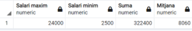
(1 fila)- Mostra la mitjana dels salaris i el número d'empleats que tenim. Arrodoneix la mitjana al número enter més pròxim i anomena les columnes com a "Salari mig" i "Num. Empleats" respectivament. (0,5 punts)
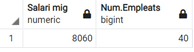
(1 fila)- Per cada diferent treball (JOB_ID), calcula la mitjana dels salaris. Mostra el nom del treball (JOB_TITLE) i ordena la informació per aquesta mateixacolumna. (1 punt)
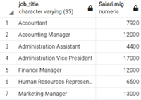
(19 files)
- Fes una consulta per calcular la diferència que hi ha entre el salari major i el menor dels empleats (tots). Anomena la columna com a Diferencia. (0,5 punts)
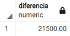
(1 fila)
- Mostra, per cada departament, el codi del departament i el salari de l'empleat pitjor pagat en aquest departament. Exclou els empleats que no tinguin assignat departament i els departaments on l'empleat pitjor pagat cobri menys de 6000 € (1 punt)
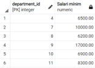
(6 files)
 BDD PAGILA
BDD PAGILA
- Quants clients te assignats cada encarregat (staff)? Ordena la informació per número de clients. (1 punts)
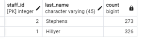
(2 files)
- Obté el número de lloguers realitzats cada mes. El mes ha de sortir amb el següent format: mm/yyyy (ex: 05/2005). Ordena la informació per mes/any. Haureu d'agafar el camp rental_period que es un interval. Per agafar el primer valor del interval, la data en que va ser llogada, podeu fer servir la funció lower(rental_period)(1 punt)
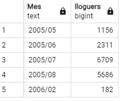
(5 files)
- Quants actors diferents (ACTOR_ID) de la taula FILM_ACTOR tenim? Anomena la columna com a "Num d'actors". (0,5 punts)
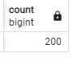
(1 fila)
- Escriu una consulta per mostrar el nom de cada client, la ciutat on viu el client, el número de lloguers i el cost mig per tots els lloguers del client. Anomena les columnes com Nom, Ciutat, Num_Lloguers i Cost_Mig respectivament. Arrodoneix el cost mig a dos decimals. Ordena la informació per ciutat i nom de client. (2 punts)
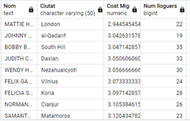
(599 files)- Volem saber les pel·lícules que s'han llogat més de 30 vegades. Volem saber el títol de la pel·lícula, l'any de llançament, el cost de reposició (replacement_cost) expressat en un valor entre 0 i 1 amb un decimal (els possibles null s'han de mostrar com a 0), i el número de vegades que s'ha llogat. Ordena la informació per número de vegades que s'ha llogat de major a menor. (2 punts)
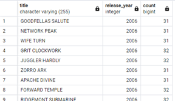
(16 registres)
Part II – Subconsultes
BDD HR
- Obtenir el codi d'empleat, nom i salari dels empleats que tenen el mateix salari que l'empleat 104. (0,5 punts)
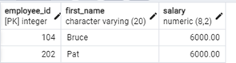
(2 files)
- Obtenir el codi d'empleat, nom i salari dels empleats que tenen el mateix salari que l'empleat 104. Exclou l'empleat 104 del llistat. (0,5 punts)
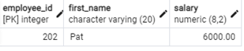
(1 fila)
- Obté el codi empleat, nom i salari dels empleats que guanyen més que la mitjana del salari dels empleats. Ordena la informació per salari. (1 punt)
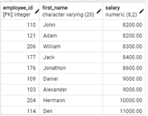
(17 files)
- Tinc empleats del departament 9 que van ser contractat abans QUE TOTS elsempleat del departament 6? Mostra els cognoms i la data de contractació. (1 punt)
(2 files)
BDD PAGILA
- Obtenir l'identificador de pel·lícula, el títol i la durada del lloguer, de les pel·lícules que tenen el preu de lloguer més alt. (1 punt)
(336 files)
- Volem saber les pel·lícules (títol i nom de la categoria) de la categoria Drama que tenen un cost de substitució (replacement_cost) menor que alguna de les pel·lícules de la categoria "Classics". (Utilitza l'operador ANY) (1 punt)
(38 files)
- Volem saber les pel·lícules (títol i nom de la categoria) de la categoria Drama que tenen un cost de substitució menor que TOTES les pel·lícules de la categoria "Classics". (Utilitza l'operador ALL) (1 punt)
(2 files)
-
Intenta respondre a la mateixa pregunta que l'apartat anterior però sense utilitzar l'operador ALL. Planteja-la com vulguis. (1punts)
-
Volem saber id d'actor i nom complert dels actors que han treballat en alguna pel·lícula de les que tenen un cost de reposició (replacement_cost) de 9.99€. (Utilitza l'operador IN) (1 punts)
(135 files)
- Quines còpies no s'han llogat? Mostra el codi de còpia i el títol de la pel·lícula. Utilitza l'operador NOT IN. (2 punts)
(1 fila)
Ampliació. Aquesta és de nivell a veure qui la treu! (Amb el vist fins i una mica d'imaginació es pot fer). (2 punts extra )
- Volem saber el número total de lloguers que es van fer en cada un dels trimestres de 2005 i el total de pel·lícules llogades en aquest any. Cal mostrar la informació tal com s'indica en la figura.
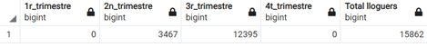